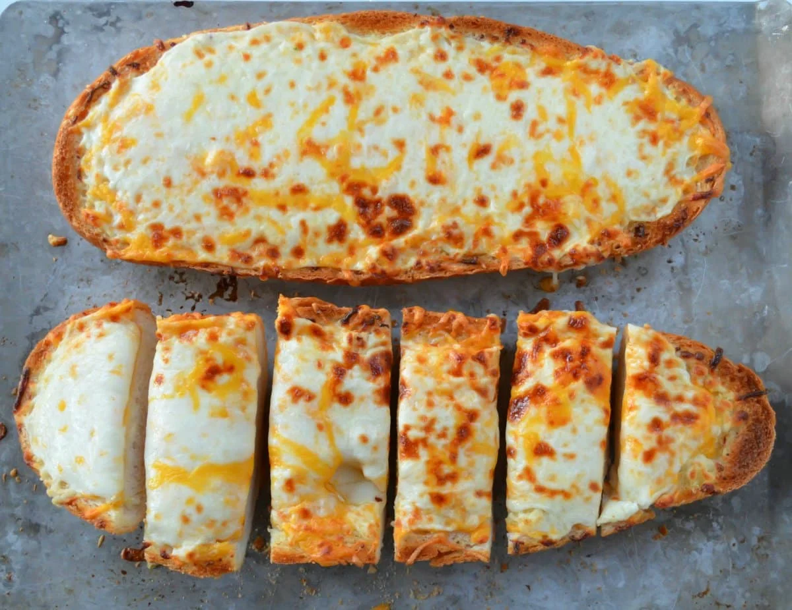

Cheesy Bread

Description
This is a very simple cheesy bread. You could call it bachelor chow.
Ingredients
- Preferred Bread
- Cheese
- Optional Seasonings, such as garlic
Steps
- Top bread with shredded cheese, fancy grated cheese, whatever you like.
- Add seasonings here with the cheese if you want them, such as garlic.
- Toast the bread with the cheese in order to toast the cheese, too. Nice 'n crispy.
Home